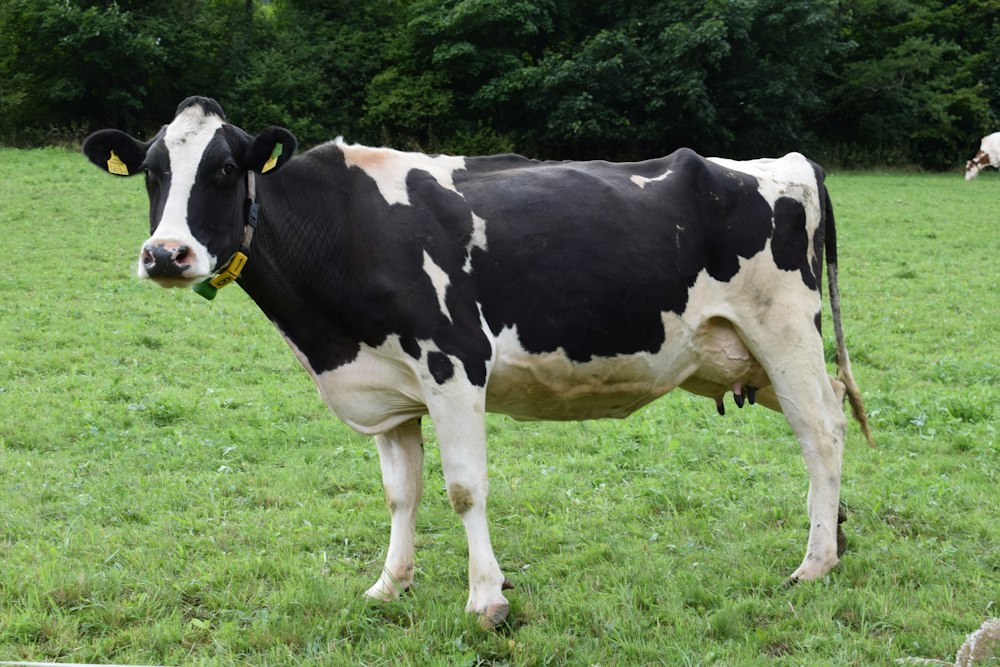

PENTERNAKAN LEMBU
Lembu ADIRUL merangkumi baka Lembu KK (Kedah-Kelantan), Brahman, dan Limousin. Dipelihara secara sistematik dalam persekitaran semula jadi bebas tekanan bagi menjamin kualiti daging serta susu yang unggul.
HARGA
RM 4,200.00
per seekor (Lembu Qurban / Sedia Sembelih - 280kg - 350kg)
- Lembu Baka / Induk Bunting: RM 5,500.00
- Pakej 1 Bahagian Lembu Qurban: RM 680.00
- Penghantaran percuma menggunakan lori ternakan berdaftar
PENJAGAAN
- Diet Pemakanan: Silaj jagung, rumput Napier, hampas kelapa sawit, dan makanan berformula protein tinggi.
- Sistem Minuman: Mangkuk automatik dengan air bersih tanpa had & blok garam mineral.
- Vaksinasi & Penjagaan: Suntikan vaksin FMD (Kuku & Mulut) serta ubat cacing berjadual.
- Kesejahteraan: Mandian harian dan pengudaraan reban yang berterusan.
KAWASAN
- Sistem Kandang: Kandang konkrit berbumbung dengan palung makanan teratur.
- Keperluan Ruang: Minimum 4 - 5 meter persegi bagi setiap ekor lembu dewasa.
- Kawasan Padang Ragut: Padang ragut berpagar seluas beberapa ekar untuk latihan fizikal.
- Saliran & Sisa: Sistem saliran najis moden mesra alam dan tidak berbau.